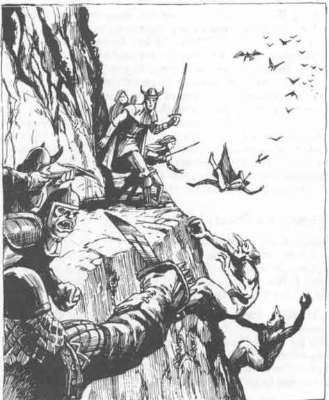
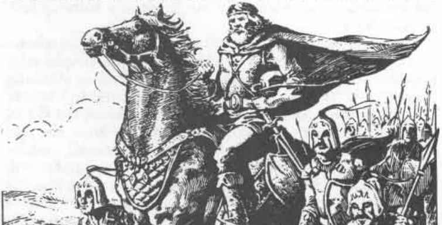

奥斯其他地区 · Elsewhere on Oerth
Karll of Urnst：乌恩斯特公爵 · Karll of Urnst: Duke of Urnst
奥斯其他地区 Elsewhere on Oerth
Karll of Urnst

乌恩斯特公爵
 |
|
Karll of Urnst 是上一任乌恩斯特公爵与公爵夫人六个孩子中最小的一个。年幼时，他就表现出对户外生活的喜爱。由于没人指望他继承公爵之位，当一位家族朋友提出训练这个最小的儿子成为巡林客时，他的父母既惊喜又高兴。Karll 本人急切得几乎在父母还没说完消息之前就已经收拾好行装。
公国拥有世上唯一的巡林客训练学校，年轻的 Karll 成为了那里最优秀的学生。在那里，他很快学会了追踪和对抗巨型生物的一切知识，并在 21 岁时成为“奔行者”，这是可能达到的最早年龄。
接下来的几十年里，年轻的卡尔勋爵（源自父亲的礼貌性头衔）生活在彻底的幸福中。他轻松吸收导师关于必须不断与一切形式的邪恶作战的教诲，尤其是涉及巨人和类人生物的邪恶。他混乱善良的天性使他成为一个个人主义者，经常独自投入荒野数月，出来时疲惫、满身尘土、被旅途染脏，带着一串新鲜战利品向同伴展示，并给上级带去几句消息。
与此同时，公国里的家族生活并不顺利。卡尔的哥哥们在与沙漠游牧袭击者的边境战争中阵亡，两名姐姐被不明敌人刺杀（一个同时向两人求婚都被拒绝的邻国领主受到怀疑）。当卡尔最后一位幸存的兄弟在父亲去世后继承公爵之位时，他正饱受伤势后遗症折磨，寿命已经所剩无几。因此，令卡尔又惊讶又不高兴的是，他被召回巡林客工作，被培养为公爵之位的继承人，因为他是唯一的继承人。
兄长去世后，卡尔成为公国继承人，但他对整件事都很不开心。他从未预想过自己会成为公爵，没有接受过这项工作的训练，也不愿放弃森林中无忧无虑的生活。他几乎是被拖回家的；若不是巡林客上级直接下令，他早就会辞去头衔、回到森林。
卡尔决定尽力做好新的职位。他在军队中引入了许多改进，包括更好的武器、铠甲和训练。他请来许多巡林客训练军队，也亲自进行了大量训练，把林野技艺和追踪知识传授给士兵。
他关心自己的公国，主要是因为公国能为他永无止境的反邪恶战争服务。他对政府的日常需要缺乏耐心，也因此成了不择手段之人的磁石。他天真地认为别人和自己一样心怀善意；而由于没有接受统治艺术的训练，他已经让自己周围聚集了土匪王国之外规模最大的盗贼群体。
结果，公国治理得很差。法庭判决归于向法官行贿最多的人，农民遭到征税和欺骗，他们的女儿也会被任何当权者随意掳走。农民把责任归咎于公爵腐败的顾问，而不是公爵本人。
试图向公爵说明当地真实生活状况的请愿者，会受到神秘土匪的威胁；公国里还发生过顽固抗议者遭刺杀的事件。如果公爵没有如此痴迷于讨伐邪恶以及巨型生物，他很可能会注意到这些情况并采取激烈措施；但身边腐败的顾问有意让他蒙在鼓里。
卡尔公爵是个高大、强壮、英俊的男人，终身户外生活使他皮肤黝黑。他的头发是棕色，眼睛呈冰绿色。他在巡林客生涯早期就专精弓术，拥有一把 +4 长弓和一壶屠杀邪恶生物箭。他非常自豪于两件家族传家宝：一套 +4 全身板甲和一面 +1 盾牌。他还拥有一把火舌双手剑、一件从邪恶法师尸体上取下的位移斗篷、一枚再生戒指和一双食人魔力量手套。
卡尔公爵根据魔法物品对抗邪恶的价值来评价它们，并且如果能获得一件专门用来杀死邪恶类人生物和巨人的魔法物品，他会毫不犹豫地拿自己的王冠、宝珠或权杖去交换。他还拥有一套相当完整的法术书，但除了重新学习自己已经知道的法术外，他并不太需要这些法术书。
卡尔公爵最终的目标，是发动一场伟大的反邪恶远征，尤其针对与邪恶巨人和类人生物有关的邪恶。他在大多数事情上都讲道理，但如果有人告诉他这样做不可能或不受欢迎，他就会勃然大怒。尽管政府的许多职能需要他亲自处理，他仍会一次消失数日，钻入森林猎杀邪恶的类人生物和巨人。
卡尔公爵不明白，对巡林客来说值得赞许的行为，对统治者而言未必是好事。他把公国看作自己反邪恶远征的基地，无法相信自己作为公爵的职责优先于作为巡林客的职责。他的臣民喜欢他，但也知道，如果有必要保护更多人免受邪恶侵害，他会牺牲他们。难怪他们对此感到怨恨。除非情况改变，卡尔公爵注定要失败。在大臣们坚持下，他正在寻找妻子，却无法理解邻近的统治者为什么似乎不愿把女儿托付给他。
Tang the Horrific：紫鹰部族王子 · Tang the Horrific: Prince of the Clan
Tang the Horrific
部族王子——干燥草原
 |
|
Tang the Horrific 出生在干燥草原的一座圆顶帐篷里。他度过了普通的干燥草原童年，很早就学会骑马、射弓、狩猎和袭击邻近部落。
与其他游牧男孩不同，年轻的 Tang 坐立不安。他想看看奥斯其他地方的奇观，即使只是为了激励自己的人民向定居民族发动进攻并征服他们。他的父亲、部族的可汗给予儿子祝福，允许他在定居民族之间旅行。他给儿子一座单人圆顶帐篷和一峰双峰骆驼，还给了他一串强壮的游牧矮种马。
从那以后，Tang the Horrific（这个绰号是他最初遇到的文明人给他的）就在奥斯各地游荡，以佣兵为生。他仍然拒绝住在室内，只要可能就搭起自己的圆顶帐篷。他侍奉过许多主人，有善有恶。年轻的游牧人曾负责训练盾之地几位当地领主的骑兵，也曾在伊乌兹、大王国、灰鹰、弗尤伦迪和坦赫等地侍奉主人。当他“没有工作”时，就会和勇敢的冒险者队伍一起参加袭击。
目前 Tang 正处于两份工作之间，靠积蓄生活。他的圆顶帐篷搭在盾之地，很快就会有某位对轻骑兵现状不满的当地领主联系他，请他安排训练。在此期间，他用自己最喜欢的方式放松：骑着矮种马，练习射术和弯刀技艺，并学习新的林野知识。
Tang 精通刀、矛、手斧、弯刀、短弓、骑手连枷、带刺小盾、轻型骑枪、匕首和标枪。他掌握人民的野蛮技能：攀爬悬崖、在自然环境中隐藏、突袭、背后防护、跳跃与疾奔、侦测幻觉和魔法、领导、求生、急救、户外技艺、追踪、驯兽、骑术、远距离信号和圆顶帐篷建造。
他不喜欢魔法，也不使用魔法武器，因为他认为真正的塔尔可汗不应依赖这些东西。
尽管长期生活在文明人之间，Tang 仍然是个野蛮人，并且牢牢坚持自己人民的信条，尤其是仇杀传统。尽管他的阵营如此，如果他发誓与某人为敌，就会竭尽全力给对方带来灾祸。
Tang 是个身材矮小、双腿弯曲的男人，有圆而扁的脸、塌鼻子、夹杂灰发的黑发，以及黑色的斜眼。他几乎总在微笑；对任何他确认不邪恶、也不与 Iuz 或其邪恶盟友有关的人，他都非常友好。他拥有许多奥斯地图，经常仔细研究，试图找出一支干燥草原游牧人组成的野蛮军队，如何不用穿越中间大片敌对领土，就能前往 Iuz 的办法。他识字，并能流利地说几种语言。
他有一些野蛮人的怪癖和禁忌：除非在圆顶帐篷、帐篷或露天，否则他不会自愿睡觉；如果被迫在室内过夜，他会感到被困住，并经常做可怕的噩梦。他还有一项个人禁忌，禁止自己骑乘马或骆驼以外的任何东西。驴、象、车辆和其他交通方式都被他禁止。
Tang 离开 Iuz 时背负着巨大的阴影，并被对 Iuz 的疯狂憎恨吞噬。他已经向 Iuz 宣誓仇杀，会攻击自己看见的任何邪恶类人生物，因为他认为那是 Iuz 的代理人。如果有人问他最想做什么，他会连续数小时谈论自己的愿望：带领一大群本族人，并以荒原游牧人、虎狼游牧人的部族为盟友，把 Iuz 的整个王国夷为平地，杀死其中每一个生物。他反复研究地图；只要找到办法，就会回到故乡召集自己人民的野蛮大军，把 Iuz 彻底摧毁。
Tang 对 Iuz 的执着仇恨对他而言很不寻常，因为他通常友好而随和。他对 Iuz 的仇恨始于自己担任 Iuz 骑兵佣兵指挥官期间。Tang 鄙视“文明”人，因此并不太介意与 Iuz 的骑兵一起攻击定居民族。然而，当 Iuz 要他率部进攻荒原游牧人时，Tang 反叛了。荒原游牧人与他自己的人民太过相似，他无法逼自己屠杀那些与自己如此相像的人。Iuz 下令逮捕这个年轻游牧人，但 Tang 设法说服自己的骑兵部下杀死传令者，并带着骑兵叛逃到狼游牧人一方。
年轻游牧人拒绝被逮捕的无礼举动使 Iuz 暴怒。他一直没有停止寻找 Tang；如果 Tang 被带到 Iuz 面前，游牧人可以预期不会得到任何怜悯。Iuz 原本计划让 Tang 训练的骑兵去对付北方边境的游牧民族，而看到游牧人因为自己的部下得到强化，更令他怒不可遏。
Tang the Horrific 未婚，因为他不认为“文明”女孩适合与紫鹰部族的塔尔可汗相伴。他已经非常擅长修补自己的圆顶帐篷，也能酿造上好的库米斯（发酵奶）。他总是乐于见到游牧同胞，并会高兴地与他们彻夜交谈，讨论哪一种弓最好、马匹、或比较各自的狩猎方法。
Tang 是一名出色的将军，遵循游牧人的方式，习惯指挥各种类型的部队。Iuz 认为他构成威胁是正确的：如果 Tang 成功带领自己的人民组成的部族大军，与北方游牧人一起进攻 Iuz，那么几乎没有什么能抵挡他们，只有城市例外；而没有补给，城市将会挨饿。
Timitrios Spartakos：大王国魔法使用者 · Timitrios Spartakos: Magic-User of the Great Kingdom
Timitrios Spartakos
魔法使用者——大王国
| 项目 | 数据 |
|---|---|
| 护甲等级 | 3（防御手镯，AC 3） |
| 移动 | 12” |
| 职业 | MU 6 |
| 生命值 | 19 |
| 攻击次数 | 1 |
| 伤害 | 按武器或法术类型（法杖、飞镖、匕首） |
| 力量 | 4 |
| 智力 | 17 |
| 睿智 | 13 |
| 敏捷 | 12 |
| 体质 | 9 |
| 魅力 | 8 |
| THAC0 | 19 |
| 阵营 | CN |
| 特殊攻击 | 法术：4 个一环、2 个二环、2 个三环 |
| 特殊防御 | 魔法物品 |
Timitrios Spartakos 出生在大王国首都拉克塞斯，父母寒酸却出身体面。他的父亲原本是低级贵族，直到一名亲属因叛国罪被定罪，才使整个家族走向败落。Timitrios Spartakos 在街头长大，直到一位家族朋友利用影响力，让他被接纳去接受伟大 Jaran Krimeeah 的训练。
这是一项巨大的荣誉，因为 Jaran Krimeeah 是帝国皇室的亲属，对自己的学生十分挑剔。年幼的 Timitrios 像精明的街头孩子一样，先等着看这份好运究竟要付出什么代价。
与新主人相处的第一个夜晚，Timitrios 就发现了答案。一名冒充 Jaran Krimeeah 管家的帝国秘密警察，在法师宅邸的房间里审问了他。作为学徒法师，他深入参与主人的信任圈；这名“管家”迫使少年同意报告任何可疑谈话。Jaran Krimeeah 在政治上受到怀疑，因为他是帝国皇室的亲属。秘密警察在他周围织下的网络相当严密，却又足够不显眼，使傲慢的法师似乎没有察觉。已有证据表明法师正在策划政变，而他最可能向自己的学徒吐露秘密。Timitrios 的任务，就是把自己听到的一切报告给秘密警察。
这个男孩兴致勃勃地过起双重生活。他能够误导帝国最优秀的法师，让自己感到一种带有恶意的权力感。他也喜欢担任帝国秘密警察的秘密特工，发送会被帝国高级官员阅读的秘密消息。
正如秘密警察所预料的，Jaran Krimeeah 开始策划政变。他无法抗拒炫耀，向学徒透露了每一步。Timitrios 很快学会了如何诱使主人开口，他发给秘密警察的报告中充满了关于政变计划的精确细节。
当 Jaran Krimeeah 被捕时，Timitrios Spartakos 是指控他的主要证人。按照大王国审判法师时的习俗，法师被关在锁住的板甲中；他无助地听着自己的叛徒学徒详细拆解他企图发动的政变。定罪时，他尖叫着威胁要向所有自认为参与了自己垮台的人复仇，而 Timitrios Spartakos 是他的首要目标。
Jaran Krimeeah 被放逐后，帝国秘密警察为了表彰这名得宠的间谍，送给他一枚防侦测位置护符，因为愤怒的法师很容易实施报复。他们还给年轻的 Timitrios 一个机会，让他跟随一名著名法师学习。
Timitrios 很高兴能继续学习，但很快发现自己的老师相当脱离世俗；学生离开课堂后，老师几乎不关注他们，因此学生只能自行安排。Timitrios 开始饮酒——他说，只是为了好玩。
当他发现一些同学在非法使用所学技艺时，Timitrios Spartakos 决定把这些信息变成自己的优势。他巧妙地结合向秘密警察告密和背后捅刀，很快让所有其他学生都害怕他。他确保自己与主人保持良好关系；通过委婉地说服老师相信自己是一名乖巧、勤劳的男仆，他赢得了老师的感激和好评。他的魔法才能是使自己成为老师首席学生的唯一剩余条件。
老师去世后，Timitrios 得到了一盒地图，据称标出了宝藏的位置。Timitrios 搬到灰鹰城，因为宝藏就在附近，也因为想避开那些记得他背叛和背后捅刀的人。在灰鹰，他的坏名声还没有传到这里，因此很容易找到工作。
在灰鹰，Timitrios 开始酗酒。他经常一连数周醉得不省人事，只有当酒快喝完时才会摇摇晃晃地出门。他最终注意到积蓄正在耗尽，于是设法清醒过来。
现在，27 岁的 Timitrios Spartakos 有黑发、橄榄色皮肤和黑眼睛。他身高普通，通常穿普通街服，而不是法师长袍。他的魔宠是一只花猫，总在他身边。
除了防侦测位置护符，Timitrios 还拥有一枚曾属于上一位老师的法术储存戒指。其中只储存防御性法术：羽落术、隐形术、防护普通飞弹和传送术。他还有以下物品：两瓶寻宝药水、一枚 +2 防护戒指、一根抵消魔杖、一双加速之靴、一只火巨灵瓶，以及两颗欧恩石，一颗淡薰衣草色，一颗薰衣草色与绿色相间（分别能吸收最高四环和八环法术）；这些物品都来自他两位强大的前任老师。
山谷法师没有忘记这个背叛自己的年轻学生。他的山谷精灵刺客正在寻找 Timitrios，并向法师报告他的确切位置。一旦知道这个犯错的学生究竟在哪里，山谷法师就打算去拜访他，以他的话说，两人要“一起叙叙旧”。
关于这个来自大王国的年轻法师，不光彩的传闻也开始在灰鹰流传。他曾数次重新陷入醉酒状态，并在醉酒时搞砸了几份工作。他拒绝牧师帮助，声称自己没事；但需要可靠施法者的人，越来越不愿意雇用这个来自拉克塞斯的阴郁年轻人。
如果有人邀请 Timitrios Spartakos，他大概愿意和一支冒险队前往自己宝藏地图上标记的地点。然而，他有 90% 的概率会在夜间拿走“属于他的那一份”，然后离开。
Guiliana Mortidus：角之社牧师 · Guiliana Mortidus: Cleric of the Horned Society
Guiliana Mortidus
牧师——角之社
| 项目 | 数据 |
|---|---|
| 护甲等级 | 3（环带甲 + 盾牌） |
| 移动 | 9” |
| 职业 | C 8 |
| 生命值 | 50 |
| 攻击次数 | 1 |
| 伤害 | 按武器或法术类型（钉头锤、法杖、法杖投石索、棍棒） |
| 力量 | 10 |
| 智力 | 11 |
| 睿智 | 16 |
| 敏捷 | 18 |
| 体质 | 14 |
| 魅力 | 18 |
| THAC0 | 16 |
| 阵营 | LE |
| 特殊攻击 | 法术：5 个一环、5 个二环、3 个三环、2 个四环 |
| 特殊防御 | 法术 |
Guiliana Mortidus 出生于角之社成员家庭。她的母亲是邪恶战士，父亲是邪恶牧师。他们在女儿出生前就把孩子献给角之社服务。她年纪足够大时，接受了彻底的测试；测试表明她有成为牧师的潜力。因此，她在最早的年龄开始接受牧师训练。
Guiliana Mortidus 并不是受欢迎的学生——她对能力较差者的轻蔑，加上记仇的能力，确保了她几乎没有朋友。
她严格按照进度完成学业，却没有表现出任何非凡天赋。她毫无怨言地执行分配给学徒的杂务，虽然并不热情。完成训练后，她被授予牧师等级。
她小心地向上级和老师隐藏自己的炽烈仇恨，因为她估计他们会把她出卖给她的敌人。她暗中愤怒于自己没有地位去粉碎每一个曾经冒犯她的人。当她被分配到角之社神殿中的低级职位时，她礼貌地微笑并接受，耐心等待时机。
数年后，她的耐心得到了回报。她获得了一个职位，担任正在准备战争的角之社军队的牧师“顾问”。她兴高采烈地随军出发，睁大眼睛寻找一切可以提升自己的机会。
她在军队中迅速积累经验，也得到了一些魔法物品，但没有任何特别有价值的东西。贵重物品总是交给高级指挥部；看着他们炫耀那些她渴望据为己有的物品，让她血液沸腾。
最后，在一次与盾之地人的战斗后，这名年轻牧师在阵亡者和伤员中寻找需要治疗的人。她从一名盾之地军队阵亡首领身上找到了一枚人类影响戒指，又从一名受伤、失去意识的角之社牧师身上找到了一件纯粹邪恶护符；她立即杀死那名牧师，以便拿走护符。
此后，她一直使用这两件物品，但总是非常小心：她不希望任何人知道自己拥有它们。她见过许多同僚为了魔法物品在睡梦中被刺死或闷死，不想遭遇同样的命运。她用戒指暗示同僚，他们不应该阻碍她向顶层攀升；她还在试验如何向上级暗示自己值得晋升。
拥有这两件物品后，Guiliana 比以前更加自负，也更加不受欢迎。在此以前，她只是因为令人讨厌的行为，以及对自己缺乏吸引力外貌有充分理由的防御，而让人难以忍受。现在，凭借特殊魔法物品，她几乎疏远了角之社中所有与她同级或级别更低的人。她的上级密切监视她，并正确地怀疑她有野心。
Guiliana Mortidus 是个瘦削、邋遢的女人，有细长杂乱的棕发、软弱的五官、坏牙和褪色的蓝眼睛。她穿着一套破旧的环带甲，战斗时携带盾牌。角之社上级要求她做什么，她就做什么，除此之外什么也不做。
她已经建立了一个小型间谍网络，成员主要是一些以为自己得到角之社授权的熊地精，直接为她工作。她打算利用他们提供的信息陷害敌人，从而进行报复。她不知道，自己招募的一名卑微酒馆小工其实是一名利用伪装监视她的刺客。
她的上级目前还没有理由担心她的阴谋，但他们想确保这些阴谋不会危及自己。如果她的计划持续无能，他们会以罪名起诉她、定罪并处死。如果她的计划显示出潜力，他们会暗中鼓励她调整计划，使其符合上级的总体计划。
Guiliana 目前是角之社主神殿中的中等阶级牧师，位于莫拉格城。她曾多次执行前往角之社盟友处的小型任务，例如前往 Iuz。她有几个下属，通过威胁和虐待来统治他们。所有不幸地位低于她的人，都憎恨并害怕她。
除了其他物品外，Guiliana 还拥有一根衰朽法杖，同时可作为 +2 法杖投石索使用，以及一把 +1 钉头锤。她目前正在与角之社谈判，想要一套 +2 链甲；这套铠甲是熊地精在最近的一次战斗中缴获的。不幸的是，拥有铠甲的熊地精萨满非常清楚它的价值，开出了高价。
除了复仇野心外，Guiliana 完全忠于角之社的理想与目标。她在外界缺乏经验，因此几乎无法理解竟然还存在其他生活观念，更不用说认为那些观念合理。
她暗中认为，任何不接受角之社信条的人，至少犯有故意自欺之罪，甚至可能已经疯了。她很少与囚犯交谈；而在少数几次交谈中，她都无法理解囚犯竟然可以持有与她截然相反的观点。她很乐意争辩哲学和阵营问题，却不会接受这样的观念：对那些聪明、勤劳并服从社会法律的人来说，角之社并不是人间天堂。